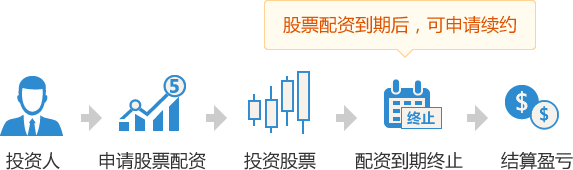

炒股利器，5倍杠杆，涨停就赚50%
精明的股民最痛心的莫过于面对市场机会，却缺少资金加仓，或临时资金短缺时，忍痛平仓。空有精明的分析，却因资金太少而收益寥寥。
股票配资是一种创新的资金融资工具，通过少量的自有资金当本金，可配资本金3-6倍的资金，最多可配资600万。
简单来说假如您有1万本金，可配资6万，共7万资金由您操盘。配资后1个涨停板就能赚70%，盈利全部归您。
配资资金最短可使用1个月，最长6个月。每月需支付资金使用利息，利息每月1分6到1分9，借款多、期限长、越优惠。
专业风控，帮您养成良好投资习惯
股票配资完成后，您会收到一个证券公司的股票交易账户，然后就可以开始交易了。
为了保护配资资金安全，同时帮您养成良好的投资习惯，交易账户会设置警戒线和平仓线。
亏损警告线：当总操盘资金低于警戒线以下时，只能平仓不能建仓，我们将有权把您的股票减仓到本金余额的5倍。
亏损平仓线：当总操盘资金低于平仓线以下时，我们将有权把您的股票进行平仓，为避免平仓发生，请时刻关注本金是否充足。
| 借款月利率表 | 借款10万以下 | 借款10万-100万以下 | 借款100万或以上 |
| 借款1-2个月 | 1.9分 | 1.8分 | 1.7分 |
| 借款3-6个月 | 1.8分 | 1.7分 | 1.6分 |
| 注：月利率1.6分，就是每月支付借款资金的1.6%的利息，如借款1万，每月利息160元 | |||
1、不得购买S、ST、*ST、S*ST、SST、以及被交易所特别处理的股票；
2、不得购买权证类可以T+0交易的证券；
3、不得购买首日上市新股（或复牌首日股票）等当日不设涨跌停板限制的股票；
4、借款金额50万以上单只股票不得超过账户总资产的50%（50万或以下不受限制）；
5、借款金额100万以上创业板单只股票不得超过账户总资产的33%（100万或以下不受限制）；
6、单只股票持仓总市值不得超过该股前5个交易日日均成交额的30%；
7、不得进行坐庄、对敲、接盘、大宗交易、内幕信息等违反股票交易法律法规及证券公司规定的交易。
操盘前必读
1、请尽量保持总操盘资金高于亏损警戒线，及时添加风险保证金，以免到达亏损平仓线被强制平仓；
2、总操盘资金到达亏损平仓线后，如不想添加风险保证金，请及时卖出股票，以免出现超额亏损。
股票停牌处理
如果您买的股票遇到停牌，需按停牌股票市值追加30%停牌准备金，直到股票复牌；
股票复牌后，如股票上涨退还全部停牌保证金，下跌在停牌保证金里扣除下跌部分金额（剩余退还）。
超额亏损处理
如果您买的股票出现快速下跌，您来不及或忘了卖出股票，我们也来不及平仓处理（我们有权平仓，但不保证平仓价格），出现的超额亏损由操盘人承担超额亏损金，所以请养成及时添加风险保证金、碰及亏损平仓线时卖出股票的良好投资习惯。超额亏损金必须在3天内补交，如恶意延期或拒绝支付超额亏损金，您在我们的平台上会有不良记录，它会影响您以后在我们平台上配资的金额和风险保证金比例，甚至无法再申请操盘。
交易手续费
手续费包含印花税、过户费和交易佣金，印花税和过户费按财政部和交易所规定收取，交易佣金0.08%（万8）由券商收取。
其他注意事项
1、投资盈利部分可在收盘后随时提取，最快可在30分钟内到您账户，如您申请提款到银行卡，同样最快可在30分钟内到您银行卡；
2、每月月初支付利息，如1月8日配资，1月8日支付第1个月利息，2月8日支付第2个月利息，以此类推；
3、配资到期前一个交易日，应将账户内所有股票卖掉，变成可用资金，借款期满当日，我们将账户内资产进行清算。
4、配资如需提前完结，且还有未支付利息的剩余月份，需要罚息一个月。如配资6个月，做了2个月提前完结，罚息一个月。
投资盈利演示
| 投资本金1万，配资5万，总操盘资金6万，每月利息950元 | |
| 第1天 | 买入股票6万 |
| 第2-29天 | 继续持有 |
| 第30天 | 股票涨了5%，卖出股票，结束操盘 |
|
== 结算盈亏 == 股票盈利：60000元 × 5% = 3000元 支付利息：950元 投资本金：10000元 您可以获得：3000元 - 950元 + 10000元 = 12050元 投资收益率：( 3000元 - 950元 ) ÷ 10000元 = 20.5% |
|
| 以上利息是按最高利率算的，实际借款多、期限长、越优惠 | |
投资亏损演示
| 投资本金1万，配资5万，总操盘资金6万，每月利息950元 | |
| 第1天 | 买入股票6万 |
| 第2-29天 | 继续持有 |
| 第30天 | 股票跌了2%，卖出股票，结束操盘 |
|
== 结算盈亏 == 股票亏损：60000元 × 2% = 1200元 支付利息：950元 投资本金：10000元 您可以获得：10000元 - 1200元 - 950元 = 7850元 投资亏损率：( 10000元 - 7850元 ) ÷ 10000元 = 21.5% |
|
| 以上利息是按最高利率算的，实际借款多、期限长、越优惠 | |